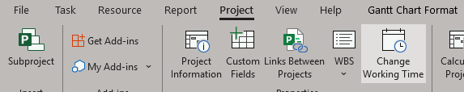
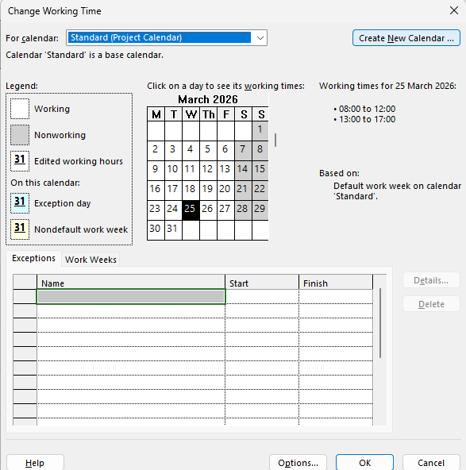
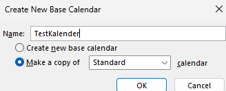
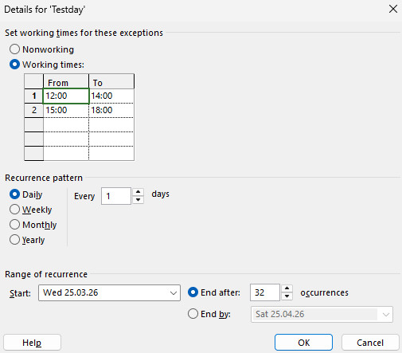
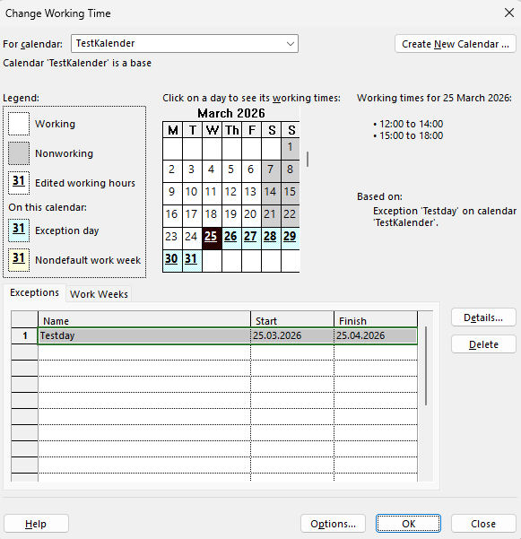
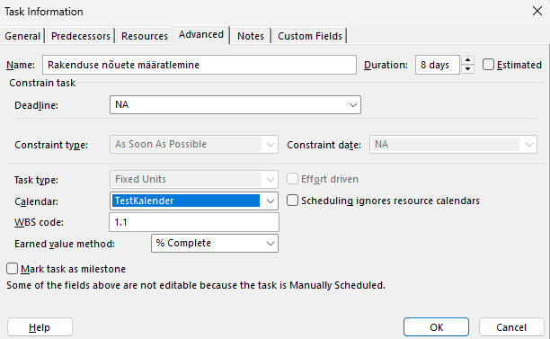
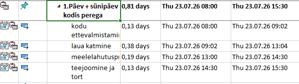

Mis on MS Project ja kalendrid
Microsoft Project on projektijuhtimise tarkvara, mis aitab planeerida, jälgida ja hallata projekte. Kalendrid võimaldavad määrata tööajad, puhkeajad ja eripäevad, et tagada realistlik ja täpne ajakava.
Kasutades kalendreid projektis, saate automaatselt arvutada ülesannete kestuse, jälgida tähtpäevi ja vältida ajakava konflikte, tagades, et kõik projektis osalejad töötavad õigel ajal.
1. Uue kalendri loomine
Avage Microsoft Project, minge menüüsse „Project“ ja vahekaardile „Change working time“. Siin saate luua täiesti uue kalendri, mis vastab teie projekti vajadustele.

2. Uue kalendri loomine
Nupule „Create new Calendar“ vajutades saate luua oma kalendri ning vaadata rippmenüüst kõiki olemasolevaid kalendreid.

3. Kalendri base loomine
Siia kirjutame oma uue kalendri nime ja valime, et see oleks standardkalendri koopia.

4. Kalendripäevade seadistamine
Siin valime kalendri tööajad ning selle alguse ja lõpu. Samuti saame valida pühad ja puhkepäevad.

5. Kalendri kontrollimine
Valime rippmenüüst loodud kalendri. Nüüd on sinisega märgitud tööpäevad ning allosas kogu kalendri algus ja lõpp; kollasega on märgitud vabad päevad.

6. Vali projektile kalender
Oma projektis klõpsame kaks korda konkreetse etapi alguskuupäeval, seejärel saame rippmenüüst, kus on kirjas „Calendar“, valida oma loodud kalendri ja selle rakendada. Pärast seda ilmub vasakule kalendri ikoon, mis tähendab, et kalender on rakendatud.

